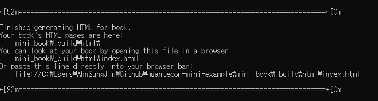
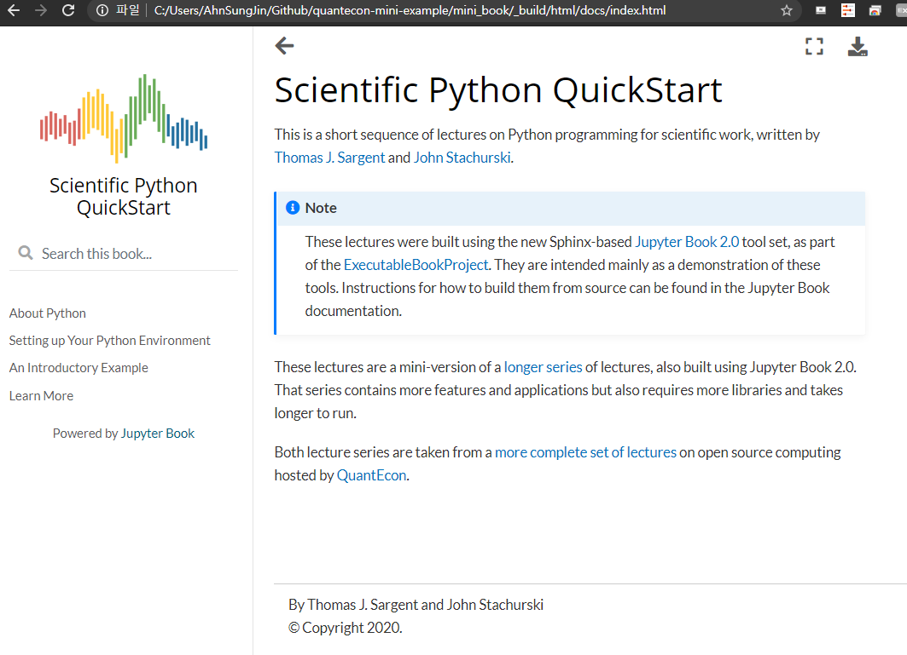

Step 1. 기본 Template 생성¶
가장 먼저 Jupyter Book을 개발하기 위한 환경을 생성할 것이다.
conda create -n [환경 이름] python=3.7
위 명령어를 활용해 새로운 가상환경을 생성한다. 새로운 환경 명을 jb-dev라고 한다면은 conda create -n jb-dev python=3.7 이라고 입력해주면 될 것이다. 지금부터는 새롭게 생성된 가상 환경 명이 jb-dev라고 가정하고 샘플 코드를 작성하겠다. 만약 본인의 환경명이 다르다면 jb-dev부분을 본인의 환경명으로 바꿔준 후 코드를 실행 하면 될 것이다. 아직까지는 Jupyter-book이 python 3.8과는 완벽히 호환 되지 않아서 python 3.7로 설치해준다.
아래 명령어를 활용해 새로 생성한 가상환경을 실행 시켜준다.
conda activate jb-dev
그리고 나서 아래 명령어를 활용해 Jupyter Book을 설치한다.
pip install -U jupyter-book
dependency들이 많아서, 설치시 시간이 조금 소요될 수 있다. 설치가 완료 됐으면 본인이 원하는 폴더 위치로 이동 후, Jupyter Book을 만든 EBP에서 제공하는 기본 template을 다운로드 한다. 아래 명령어를 통해 다운로드 가능하다.
git clone https://github.com/executablebooks/quantecon-mini-example
설치가 완료되면 quantecon-mini-example 폴더가 생성된 것을 확인할 수 있을 것이다. 해당 폴더 내에는 .github, mini_book, scripts 라는 폴더가 있을 것인데, mini_book폴더가 Jupyter Book을 만들 때 사용하게 되는 폴더이다. 해당 폴더에 Jupyter Book을 위한 환경 설정, 목차, 컨텐츠 등이 저장돼있다. 해당 폴더를 활용해 Jupyter Book을 생성해보겠다.
cd quantecon-mini-example
우선 quantecon-mini-example폴더 내부로 이동한다.
jupyter-book build mini_book/
그리고 나서 위 명령어를 활용해 mini_book폴더 내에 있는 파일을 활용해 Jupyter Book을 생성한다.

build가 완료 되면 위와 같은 문구가 뜬다. 이 때 Or paste this line directly into your browser bar문구 밑에 있는 링크를 복사해서 브라우저 창에 붙여넣기를 하면 구축된 Jupyter Book을 볼 수 있다.

왼쪽에 있는 목차를 클릭하면서 페이지간 이동이 가능하다.
지금까지 EBP에서 제공하는 기본 template을 로컬에 다운받아서 Jupyter Book을 생성하는 과정을 실습했다. 다음 단계에서는 해당 template을 본인 니즈에 맞게 수정하는 방법에 대해 배워볼 예정이다.